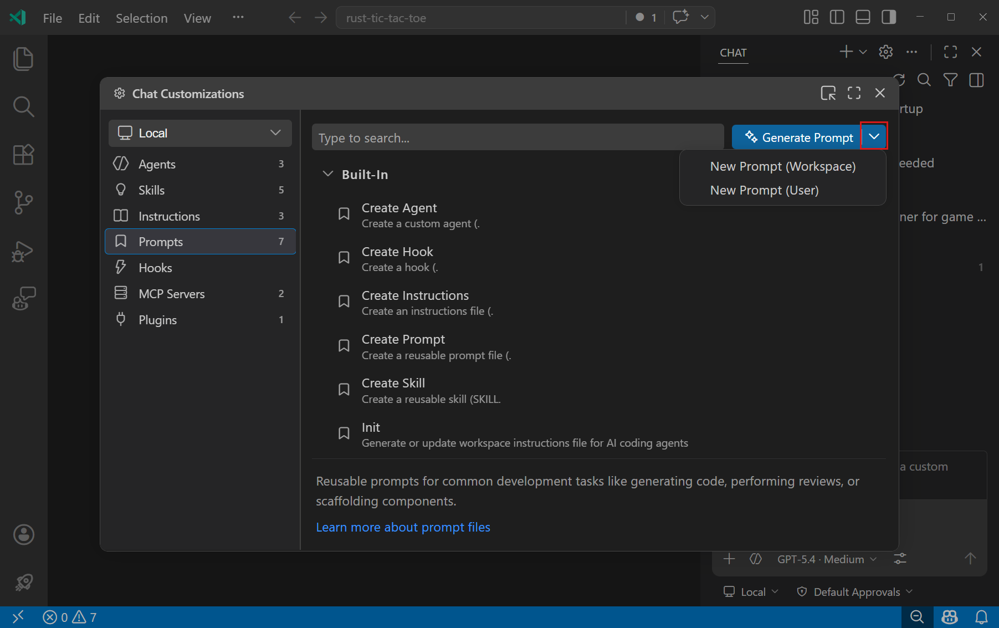
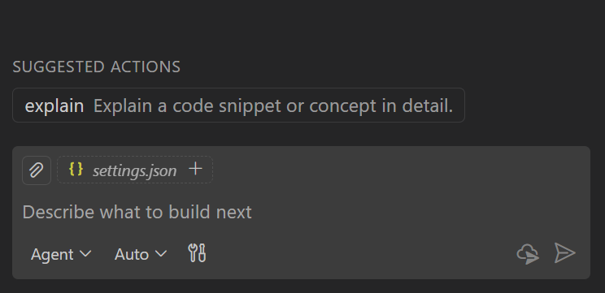

在 VS Code 中使用提示文件
提示文件（也称为斜杠命令）通过将常见任务编码为独立的 Markdown 文件，让您可以在聊天中直接调用，从而简化提示过程。每个提示文件都包含特定于任务的上下文以及关于如何执行该任务的指南。
与自动应用的自定义指令不同，提示文件需要您在聊天中手动调用。
提示文件的用途：
- 简化常见任务的提示，例如搭建新组件、运行和修复测试，或准备拉取请求
- 覆盖自定义代理的默认行为，例如创建最小的实现计划或为 API 调用生成模拟数据
[!TIP]
提示文件、代理还是技能？ 使用提示文件处理轻量级的单任务提示。当需要一个具有自己的工具限制和移交功能的持久化角色时，使用自定义代理。当需要一个带有脚本和资源的可移植、多文件功能时，使用代理技能。
[!TIP]
使用代理自定义编辑器（预览版）在一个地方发现、创建和管理所有代理自定义项。从命令面板运行聊天：打开自定义项。
提示文件位置
您可以为特定工作区定义提示文件，也可以在用户级别定义，使其在所有工作区中可用。下表列出了基于作用域的提示文件的默认文件位置。您可以使用 setting(chat.promptFilesLocations) 设置为工作区提示文件配置其他文件位置。
| 作用域 | 默认文件位置 | ||
|---|---|---|---|
| ------- | ----------------------- | ||
| 工作区 | .github/prompts 文件夹 | ||
| 用户配置文件 | 您的用户数据（特定于您的 VS Code 配置文件） |
要在用户数据中创建提示文件，请使用代理自定义编辑器或使用聊天：新建提示文件命令。
[!TIP]
在单体仓库中，启用 setting(chat.useCustomizationsInParentRepositories) 可以从父仓库根目录中发现提示文件。了解有关父仓库发现的更多信息。
提示文件格式
提示文件是带有 .prompt.md 扩展名的 Markdown 文件。可选的 YAML 前置元数据头部用于配置提示的行为：
| 字段 | 必需 | 描述 | ||
|---|---|---|---|---|
| --- | --- | --- | ||
description | 否 | 提示的简短描述。 | ||
name | 否 | 提示的名称，在聊天中输入 / 后使用。如果未指定，则使用文件名。 | ||
argument-hint | 否 | 在聊天输入字段中显示的提示文本，用于指导用户如何与提示交互。 | ||
agent | 否 | 用于运行提示的代理：ask、agent、plan，或自定义代理的名称。默认情况下，使用当前代理。如果指定了工具，则默认代理为 agent。 | ||
model | 否 | 运行提示时使用的语言模型。如果未指定，则使用模型选择器中当前选择的模型。 | ||
tools | 否 | 此提示可用的工具或工具集名称列表。可以包括内置工具、工具集、MCP 工具或扩展提供的工具。要包含某个 MCP 服务器的所有工具，请使用 <服务器名称>/* 格式。了解有关聊天工具的更多信息。 |
[!NOTE]
如果运行提示时某个工具不可用，则忽略该工具。
正文部分包含 Markdown 格式的提示文本。提供您希望 AI 遵循的具体指令、指南或任何其他相关信息。
您可以使用 Markdown 链接引用其他工作区文件。使用相对路径引用这些文件，并确保路径基于提示文件的位置是正确的。
要在正文中引用代理工具，请使用 #tool:<工具名称> 语法。例如，要引用 browser 工具，请使用 #tool:browser。
[!TIP]
如果您希望用户提供额外信息，可以使用vscode/askQuestion工具。您也可以使用类似${input:variableName}、${input:variableName:placeholder}的语法。大多数语言模型都能理解此语法，并会提示输入这些变量。
以下示例演示了如何使用提示文件。更多社区贡献的示例，请参阅 Awesome Copilot 仓库。
---
agent: 'agent'
model: GPT-4o
tools: ['search/codebase', 'vscode/askQuestions']
description: '生成一个新的 React 表单组件'
---
您的目标是基于 Github 仓库 contoso/react-templates 中的模板生成一个新的 React 表单组件。
如果未提供表单名称和字段，请使用 #tool:vscode/askQuestions 进行询问。
表单要求：
* 使用表单设计系统组件：[design-system/Form.md](../docs/design-system/Form.md)
* 使用 `react-hook-form` 进行表单状态管理：
* 始终为表单数据定义 TypeScript 类型
* 优先使用带有 register 的*非受控*组件
* 使用 `defaultValues` 防止不必要的重新渲染
* 使用 `yup` 进行验证：
* 在单独的文件中创建可重用的验证模式
* 使用 TypeScript 类型确保类型安全
* 自定义用户体验友好的验证规则---
agent: 'ask'
model: Claude Sonnet 4
description: '执行 REST API 安全审查'
---
执行 REST API 安全审查，并提供一个需要处理的安全问题 TODO 列表。
* 确保所有端点都受到身份验证和授权保护
* 验证所有用户输入并清理数据
* 实现速率限制和节流
* 实现安全事件的日志记录和监控
以 Markdown 格式返回 TODO 列表，按优先级和问题类型分组。创建提示文件
创建提示文件时，选择将其存储在工作区还是用户配置文件中。工作区提示文件仅适用于该工作区，而用户提示文件可在多个工作区中使用。
要创建提示文件：
[!TIP]
在聊天输入中输入 /prompts 可快速打开配置提示文件菜单。
- 在聊天视图中，选择配置聊天（齿轮图标）打开代理自定义编辑器，然后选择提示选项卡。
- 根据要存储提示文件的位置，从下拉菜单中选择新建提示（工作区）或新建提示（用户）。

或者，通过命令面板（kb(workbench.action.showCommands)）使用聊天：新建提示文件或聊天：新建无标题提示文件命令。
- 选择位置并为提示文件输入文件名。这是您在聊天中输入
/时显示的默认名称。 - 使用 Markdown 格式编写聊天提示。
- 在文件顶部的 YAML 前置元数据中填写配置，设置提示的描述、代理、工具和其他选项。
- 在文件正文中添加提示的指令。
- 在文件顶部的 YAML 前置元数据中填写配置，设置提示的描述、代理、工具和其他选项。
您可以在代理自定义编辑器中打开现有的提示文件进行修改。
使用 AI 生成提示文件
您可以使用 AI 根据任务描述生成提示文件。在聊天中输入 /create-prompt 并描述您想要自动化的任务（例如，"用于生成单元测试的提示"）。代理会提出澄清问题，生成带有适当前置元数据和指令的 .prompt.md 文件，并让您选择存储在工作区还是用户存储中。
您也可以从正在进行的对话中提取可重用的提示。例如，在多轮聊天会话后，说"将其转换为可重用的提示"或"将此工作流保存为提示"，代理就会创建一个捕获该工作流的提示文件。
您还可以通过从下拉菜单中选择生成提示，在代理自定义编辑器中生成提示文件。
在聊天中使用提示文件
您有多种方式运行提示文件：
- 在聊天视图中，在聊天输入字段中输入
/，然后输入提示名称。代理技能也会与提示文件一起作为斜杠命令显示。
您可以在聊天输入字段中添加额外信息。例如，/create-react-form formName=MyForm 或 /create-api for listing customers。
- 从命令面板（
kb(workbench.action.showCommands)）运行聊天：运行提示命令，然后从快速选择中选择一个提示文件。 - 在编辑器中打开提示文件，然后点击编辑器标题区域的播放按钮。您可以选择在当前聊天会话中运行提示或打开新的聊天会话。
此选项对于快速测试和迭代提示文件非常有用。
[!TIP]
使用 setting(chat.promptFilesRecommendations) 设置，可以在开始新的聊天会话时将提示显示为推荐操作。
>

工具列表优先级
您可以使用 tools 元数据字段同时为自定义代理和提示文件指定可用工具列表。提示文件还可以通过 agent 元数据字段引用自定义代理。
聊天中可用工具列表的优先级顺序如下：
- 提示文件中指定的工具（如果有）
- 提示文件中引用的自定义代理的工具（如果有）
- 所选代理的默认工具（如果有）
跨设备同步用户提示文件
VS Code 可以通过设置同步在多个设备之间同步您的用户提示文件。
要同步用户提示文件，请启用设置同步，并从命令面板（kb(workbench.action.showCommands)）运行设置同步：配置。从要同步的设置列表中选择提示和指令。
编写有效提示的技巧
- 清楚地描述提示应完成的任务以及期望的输出格式。
- 提供预期输入和输出的示例，以指导 AI 的响应。
- 使用 Markdown 链接引用自定义指令，而不是在每个提示中重复相同的指南。
- 利用内置变量（如
${selection}）和输入变量使提示更加灵活。 - 使用编辑器播放按钮测试提示，并根据结果进行优化。
常见问题解答
如何知道提示文件的来源？
提示文件可以来自不同的来源：内置的、用户配置文件中定义的、当前工作区中工作区定义的，或扩展提供的提示。
要识别提示文件的来源：
- 从命令面板（
kb(workbench.action.showCommands)）中选择聊天：配置提示文件。 - 在列表中悬停在提示文件上。来源位置将显示在工具提示中。
[!TIP]
使用聊天自定义诊断视图查看所有已加载的提示文件和任何错误。在聊天视图中右键点击并选择诊断。了解有关 VS Code 中 AI 故障排除的更多信息。
相关资源
- 创建自定义指令
- 在聊天中配置工具
- 社区贡献的指令、提示和自定义代理